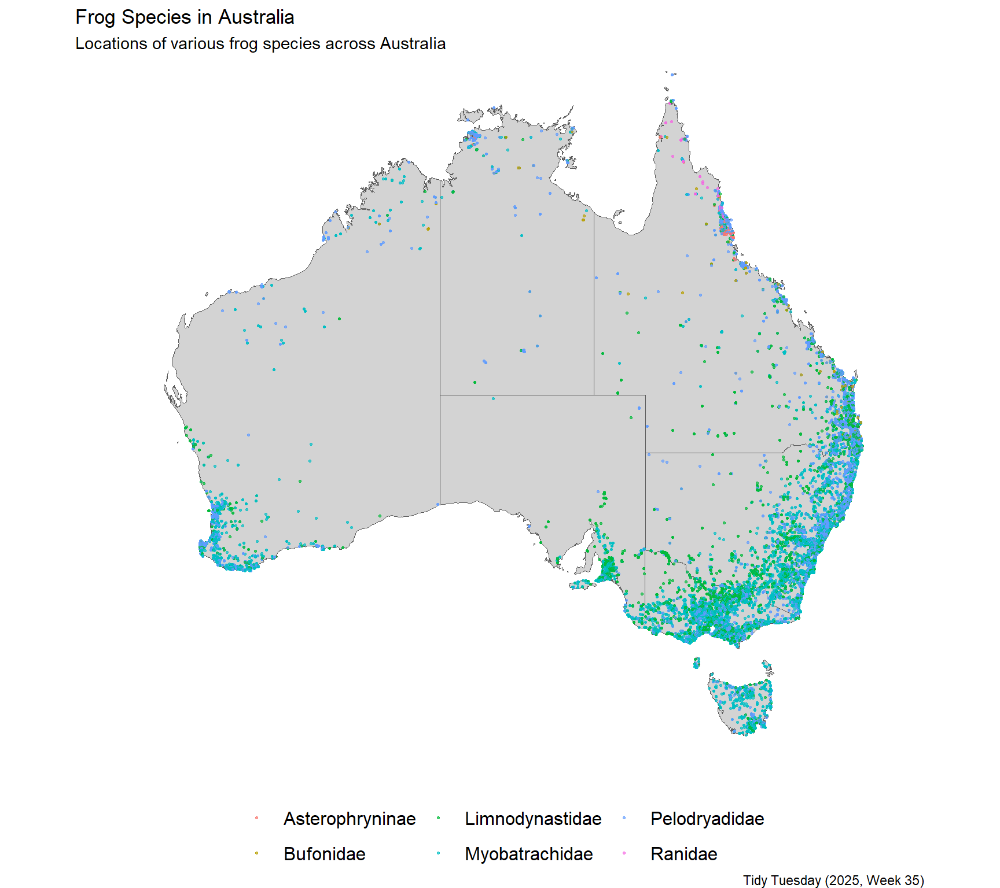
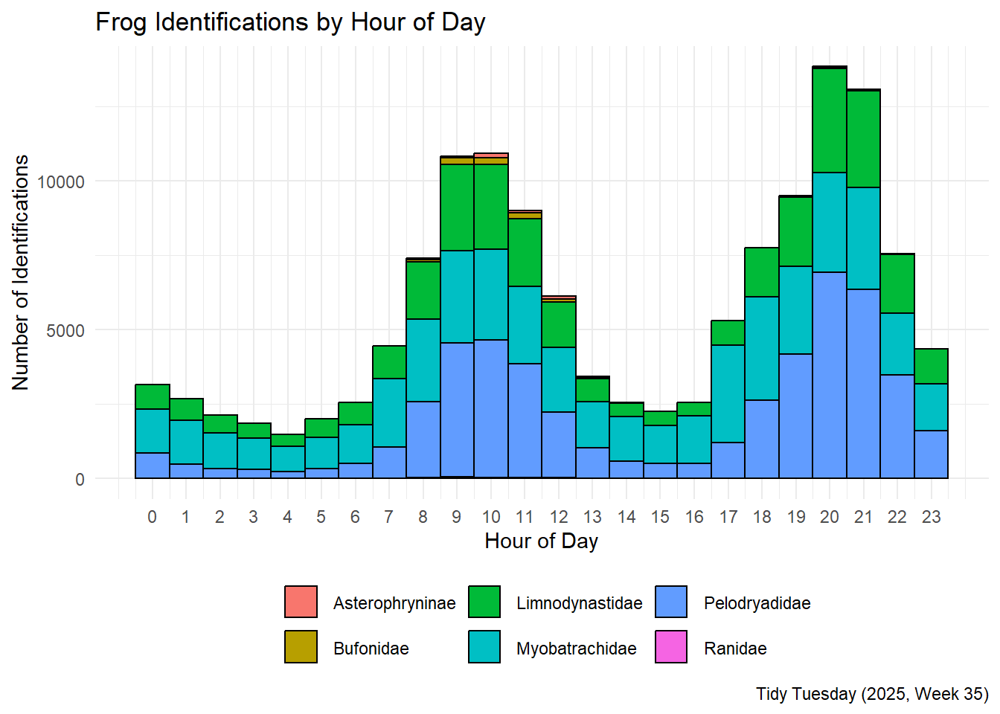
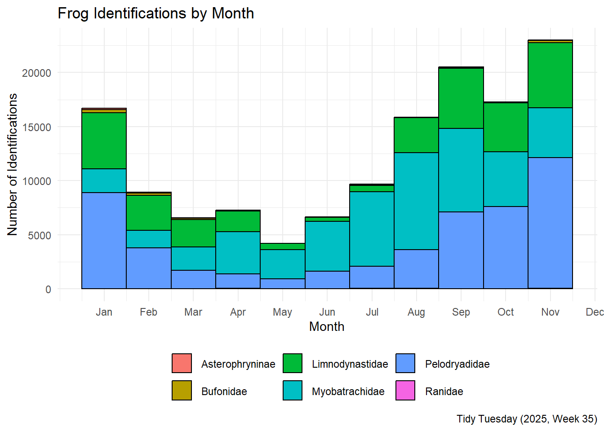
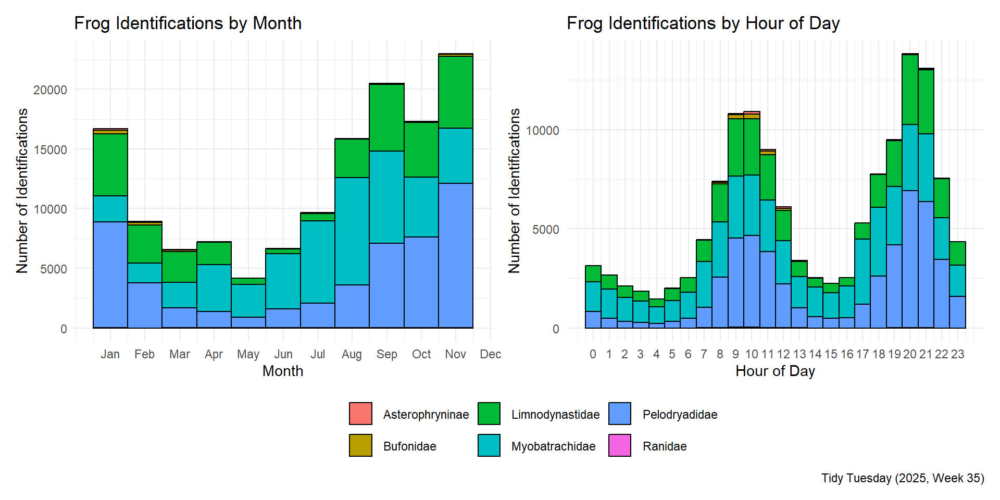

![]()
Code in R
library(tidyverse)
library(rnaturalearth)
library(sf)
library(patchwork)
tuesdata <- tidytuesdayR::tt_load(2025, week = 35)
frogID <- tuesdata$frogID_data
frognames <- tuesdata$frog_names
view(frogID)
view(frognames)September 2, 2025
I’m working my way into Tidy Tuesday, and I wanted to do something that combined both spatial and temporal data. The frogID dataset from week 35 of 2025 has both, so let’s take a look.
This is also my first post using Positron over RStudio, so we’ll see how it goes!
I love how Positron automatically shows distributions of data when you view a dataframe! Looking at the two dataframes, it looks like frogID has the locations and times of observations, while frognames has some additional taxonomic information, which may be nice to join. One weird thing is that the scientific names in frogID have some additional information after the species name, so we’ll need to clean that up a bit.
The first distribution I want to look at is the spatial distribution of frog observations. The data is all from Australia, so let’s pull a map of Australia and plot the points on it.
From here, it is just a matter of plotting the points on the map. I’ll color the points by tribe, and make them a bit transparent so that we can see areas with more observations.
## map the frogs over australia by density
australia |>
ggplot() +
geom_sf(fill = "lightgrey") +
geom_point(data = frogID |>
filter(!is.na(tribe)),
aes(x = decimalLongitude, y = decimalLatitude, color=tribe), size = 0.5, alpha = 0.7) +
# geom_density_2d(data = frogID, aes(x = decimalLongitude, y = decimalLatitude), alpha = 0.6, contour_var = "count") +
theme_void() +
theme(legend.position = "bottom",
legend.text = element_text(size=12)) +
labs(title = "Frog Species in Australia",
subtitle = "Locations of various frog species across Australia",
caption = "Tidy Tuesday (2025, Week 35)",
color="") +
coord_sf(xlim = c(110, 155), ylim = c(-45, -10))
Unsurprisingly, most of the observations are along the coast, where the climate is probably more hospitable to frogs, but also to citizen scientists (so there may be some bias in the data)!
I was also curious about the temporal distribution of frog identifications. The eventTime column has the time of day that the identification was made, so let’s look at that by hour of day.
day <- frogID |>
filter(!is.na(hour(eventTime)),
!is.na(tribe)) |>
ggplot(aes(x = hour(eventTime), fill = tribe)) +
geom_histogram(binwidth = 1, position = "stack", color = "black") +
theme_minimal() +
labs(title = "Frog Identifications by Hour of Day",
x = "Hour of Day",
y = "Number of Identifications",
fill = "",
caption = "Tidy Tuesday (2025, Week 35)") +
scale_x_continuous(breaks = 0:23) +
theme(legend.position = "bottom")
day
Interestingly, there are two peaks in identification, one around 9/10 AM and one around 8 PM. This doesn’t quite match up with dawn and dusk, which are probably the times when frogs are most active, but it may reflect when people are most likely to be out and about looking for frogs.
Finally, let’s look at the distribution of frog identifications by month. This will give us an idea of when people are most likely to identify frogs.
month <- frogID |>
filter(!is.na(month(eventDate)),
!is.na(tribe)) |>
ggplot(aes(x = month(eventDate), fill = tribe)) +
geom_histogram(binwidth = 1, position = "stack", color = "black") +
theme_minimal() +
labs(title = "Frog Identifications by Month",
x = "Month",
y = "Number of Identifications",
fill = "",
caption = "Tidy Tuesday (2025, Week 35)") +
scale_x_continuous(breaks = 1:12, labels = month.abb) +
theme(legend.position = "bottom")
month
Unsurprisingly, the spring and summer months (October to February) have the most identifications, which is probably when frogs are most active and when people are more likely to be outside looking for them.

This pulls the two temporal plots together into one figure, which is a bit easier to compare.
@online{russell2025,
author = {Russell, John},
title = {Tidy {Tuesday} - {Frog} {Distributions} in {Time} and
{Space}},
date = {2025-09-02},
url = {https://drjohnrussell.github.io/posts/2025-09-02-time-and-frogs/},
langid = {en}
}